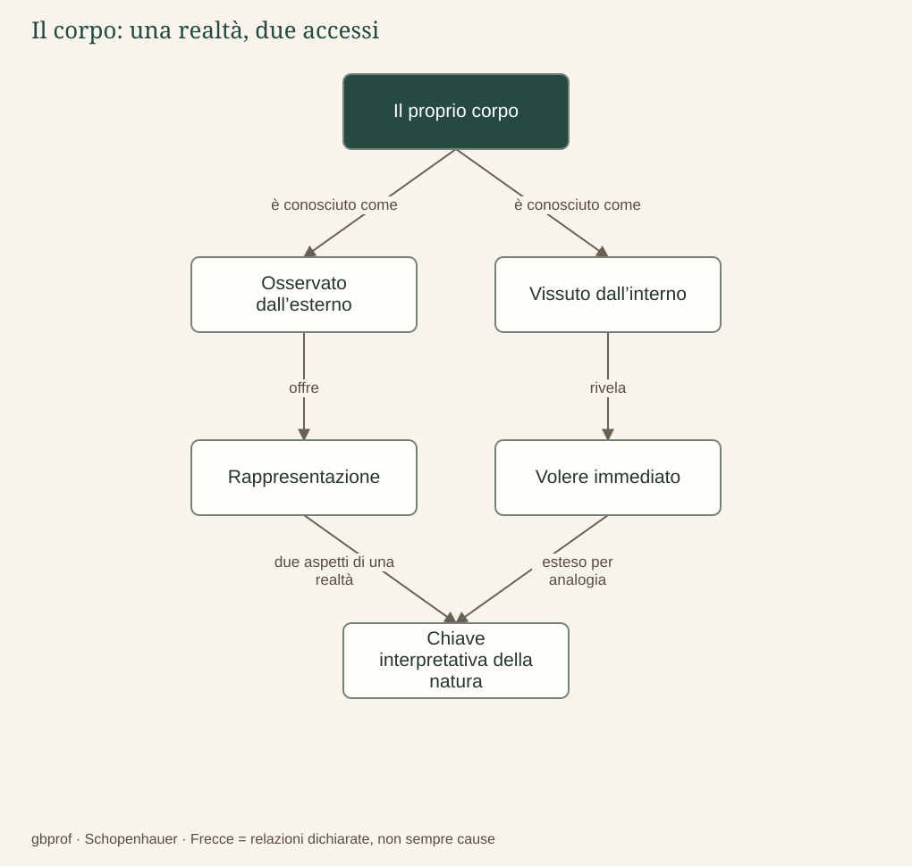

A · Comprendere Schopenhauer · 03
Il corpo conosciuto dall’interno
Esiste qualcosa che conosciamo anche dall’interno e non soltanto come fenomeno?
Posso osservare la mia mano come osservo una mano altrui: ne vedo la forma, la posizione, il movimento. Posso anche studiarne l’anatomia e spiegare quali processi accompagnano un gesto. Eppure il rapporto con il mio corpo non si esaurisce in questa osservazione, perché la fame che provo o lo sforzo con cui afferro qualcosa non sono per me soltanto eventi registrati dall’esterno. Li vivo direttamente come bisogno, tensione, piacere o dolore. Il corpo ha quindi una posizione particolare: appartiene al mondo degli oggetti e, nello stesso tempo, è il luogo di un’esperienza interna del volere.
Un solo atto, due accessi
Per Schopenhauer un atto effettivo del volere e il movimento corporeo che lo esprime non sono due eventi separati, con una decisione immateriale che spinge dall’esterno una macchina fisica. Sono il medesimo atto conosciuto in due modi: interiormente come volere ed esteriormente come movimento. Questa tesi va distinta dalla normale successione fra una deliberazione e la sua esecuzione. Posso progettare di alzarmi domani e poi cambiare idea; il progetto astratto non coincide ancora con l’atto del volere del quale parla il filosofo.
La scoperta modifica l’immagine del soggetto. Non siamo soltanto spettatori che osservano un universo estraneo; siamo già immersi in esso attraverso un’esistenza corporea che desidera, resiste, soffre e cerca soddisfazione. È proprio questa appartenenza che, secondo Schopenhauer, consente di trovare un accesso al significato del mondo. La conoscenza scientifica del corpo conserva il proprio valore, ma non sostituisce il vissuto interno al quale il filosofo attribuisce una funzione metafisica.
Dall’esperienza di sé all’interpretazione della natura
Il passaggio successivo è impegnativo: Schopenhauer estende agli altri esseri la chiave scoperta nel proprio corpo. Non sente dall’interno una pietra o un animale come sente se stesso; interpreta però i diversi fenomeni come manifestazioni di una medesima essenza, che chiama Volontà. Si tratta di un’estensione filosofica per analogia, non di un esperimento che avrebbe misurato una sostanza invisibile chiamata «volontà».
Occorre conservare anche un limite. L’esperienza interna è più immediata di quella esterna, ma si svolge ancora nel tempo, attraverso singoli atti, e non consegna una visione completa e impersonale della cosa in sé. Il corpo apre una via di comprensione; non trasforma l’uomo in un osservatore onnisciente. Questa precisazione rende il ragionamento più serio, perché permette di discuterne il punto decisivo: quanto è giustificato passare da ciò che conosco nel mio volere all’essenza dell’intera natura?
Il termine Volontà riceve così un significato molto più ampio di quello quotidiano. Nel capitolo seguente dovremo togliere alla parola ciò che normalmente vi associamo — coscienza, scelta e progetto — per capire perché Schopenhauer la impieghi anche oltre la vita umana.
Il problema in un’immagine
Dopo la lettura
Mappa di sintesi


Leggi la mappa in forma testuale
- Il proprio corpo è conosciuto come Osservato dall’esterno.
- Il proprio corpo è conosciuto come Vissuto dall’interno.
- Osservato dall’esterno offre Rappresentazione.
- Vissuto dall’interno rivela Volere immediato.
- Rappresentazione due aspetti di una realtà Chiave interpretativa della natura.
- Volere immediato esteso per analogia Chiave interpretativa della natura.
Fermati sul problema
Dal proprio volere alla natura: quale passaggio compie Schopenhauer?
Confronta il tuo ragionamento
Estende per analogia una chiave interpretativa scoperta nel corpo. L’estensione ha carattere metafisico: va discussa come argomento, non presentata come misura scientifica.